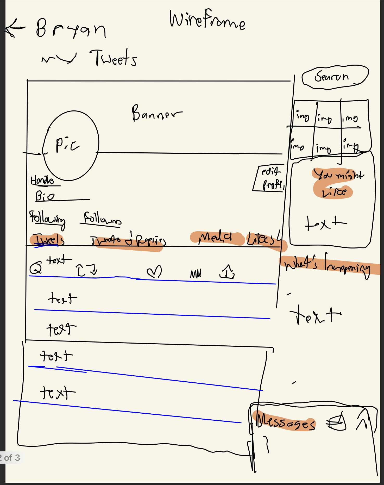
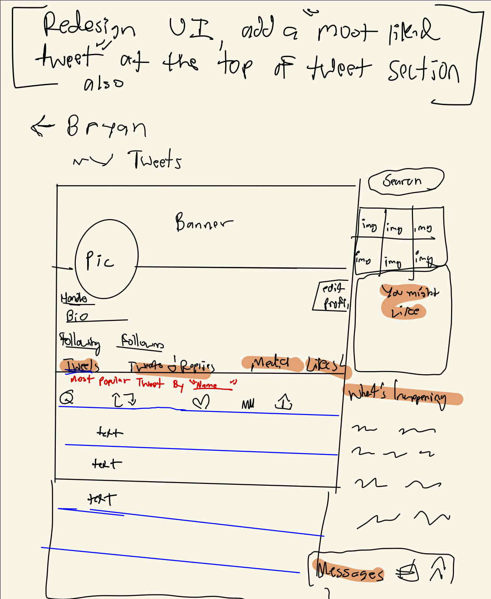

-
Using the favorite website you chose in homework 1, create a wireframe for one page of it using pen/paper, PowerPoint, or any your tool of choice. (use the 'img' tag!) Make sure to let us know what the name of your website is (Use the 'p' tag!)
Twitter
[INSERT YOUR WIREFRAMES HERE]
 -
Try to improve the website you've chosen, and create a redesigned wireframe of one page for the same website using the principles of visual hierarchy that you learned from the article.
[INSERT YOUR WIREFRAMES HERE]

-
What is the goal of the website? Who is it intended for? How does the design accomplish this? Write 2-3 sentences answering these questions. (Use the 'p' tag again!)
Twitter is an online social media platform that is open for everyone to post their thoughts and post their words or pictures for other people to see. Twitter is used more amongst teenagers, adults, and elderely people, whether for jokes or for people to share their opinions on certain topics, twitter is used amongst a large demographic.I think the design accomplashes online forums in a way where everything is structured in a way where things aren't very cluttered, they are organized and labeled and isn't in your face about wanting to tweet or having your tweets/pictures/ other forms of content consumption displayed without being a burden. Having everything about your profile in the middle and then having suggestions and messages on the right side, help keep the interface calm and unique for Twitter.
-
Write 2-3 sentences about what problems your redesign addressed, and how it solved them.
I decided that because people are always tweeting and sharing their opinions for others to see, a useful design interface I added in my wireframe was to have a "most liked tweet by ___" section near the top of your profile, that way other people can see your most popular tweet and can display a little achievement perhaps or a way to interact with someone based on this feature. I think this design is a fun way to engage twitter users in a sublte yet effective way to make others happy to use Twitter. I think this appraoch comes in way where it doesn't change the UI completely, but in a subtle way that makes users comfortable but also noticable that something has changed within the interface itself.
NOTE: Make sure to include the wireframe images in the website and don't just put it in your assets folder!
Your wireframes should look something like this: